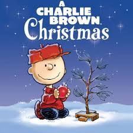
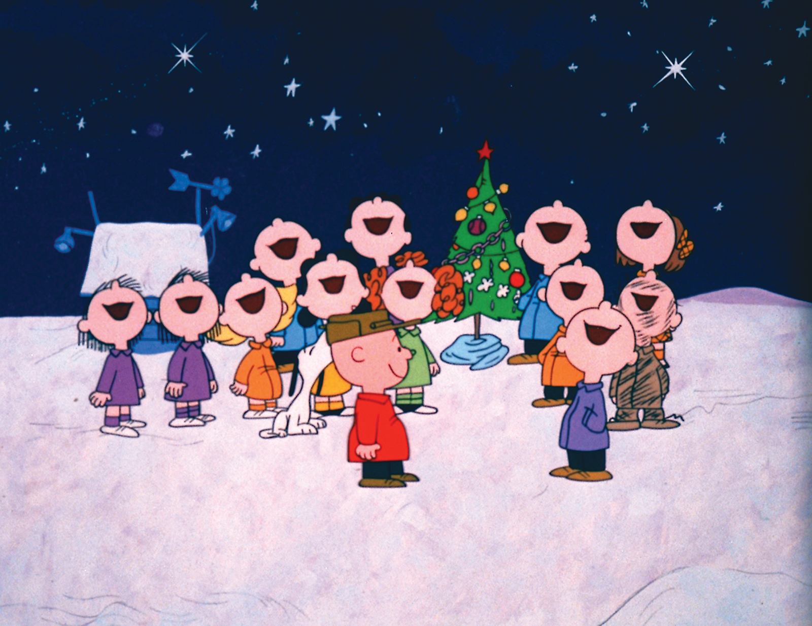

A Charlie Brown Christmas first aired in 1965 and was the first television special based on the Peanuts comics. The special follows Charlie Brown as he deals with feelings of depression while everyone else is in the holiday cheer. The special aired yearly on American cable television from 1965 until 2020.
While on their way to a frozen pond to go ice skating, Charlie Brown confides in Linus that although he likes the Christmas season, he still feels depressed. After talking to Linus and getting made fun of by Violet, Charlie goes to Lucy's psychiatric booth to ask her for advice about his problems. Lucy suggests to Charlie that he should direct the annual Christmas play as a way to cheer him up and Charlie agrees.
However Charlie only feels more upset after seeing the commercialization of the holiday. Lucy is upset about not receiving any real estate for Christmas, Snoopy decorates his doghouse to compete in a neighborhood Chrstmas decorating contest, and Sally asks him to help her write a greedy letter to Santa Claus. When he arrives at rehersal Charlie discovers that Lucy is being an uncooperative "ice queen". Charlie Brown decides that best way to bring the cast together is by getting them a Christmas tree. Lucy suggests that Charlie get a pink aluminum tree befire sending him and Linus to go get one.
At the tree lot, Charlie picks the only live tree they have, a small sapling. Linus doesn't agree with Charlie's choice but Charlie reassures him that once its' decorated it will look perfect. However when they return to the theatre to show everyone else, they are laughed at for their choice in Christmas tree. Upset with how things have ended up, Charlie loudly asks if any off them know the true meaning of Christmas. Linus says he does, then proceeds to walk to the center of the satge where he is met with a single spotlight. He drops his blanket on the floor, recites the annunciation to the shepherds, picks up his blanket, and walks away telling Charlie that is what Christmas is all about.
Charlie takes the tree home with the intention of decorating it and proving to everyone they are wrong about his tree. He puts a red ornament on the tree causing the tree to bend over, making Charlie believe he had killed the tree, defeated, he leaves the tree and walks away. the others followed Charlie home after realizing they were too hard on him; they come across the tree and fix the ornament allowing the tree to stand upright again, before linus wraps his blanket around the base of the tree and continue using decorations from Snoopy's doghouse to decorate the tree. When they finish decorating, they begin singing "Hark! The Herald Angels Sing". This causes Charlie to come out of his house, seeing that the tree is now decorated. All the kids yell, "Merry Christmas, Charlie Brown" and Charlie joins them in singing the song around the Christmas Tree.